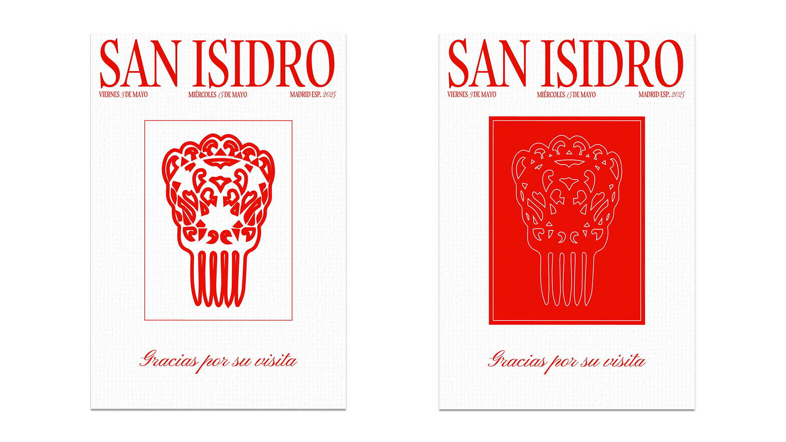
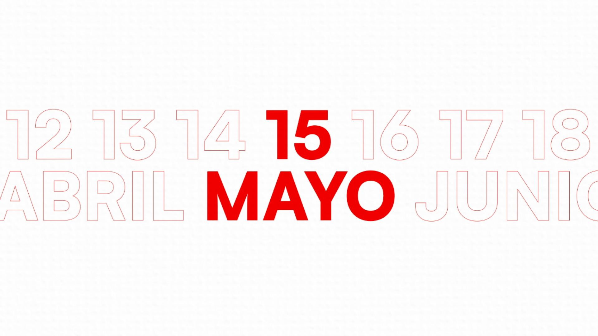
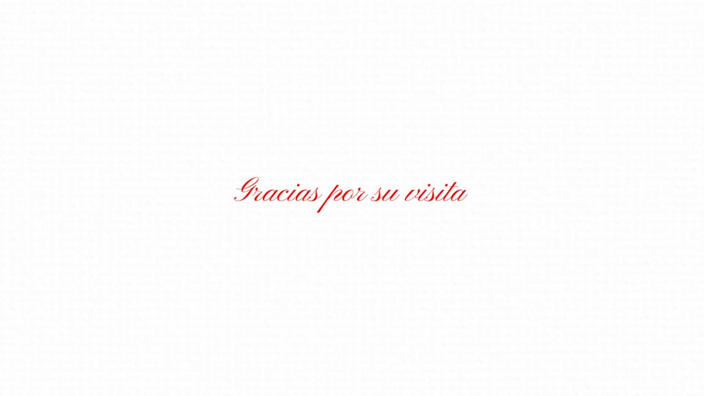
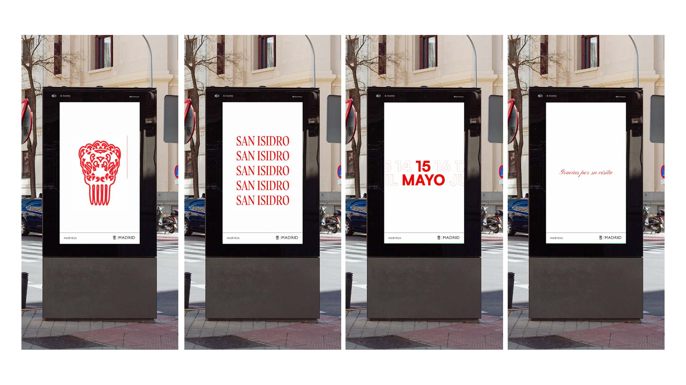

SAN ISIDRO CAMPAIGN
This audiovisual branding project celebrates Madrid’s patron festivities with a visual identity that bridges tradition and modernity. Inspired by the castizo aesthetics of bar napkins, the design embraces Madrid’s cultural roots through a bold red-and-white palette, a mix of calligraphic and sans serif typefaces, and illustrations with strong symbolic value. The animation, created in After Effects, enhances the festive energy with fluid transitions and rhythmic typographic movements synchronized to music, capturing the authenticity and vitality of Madrid in a fresh, contemporary visual language.



